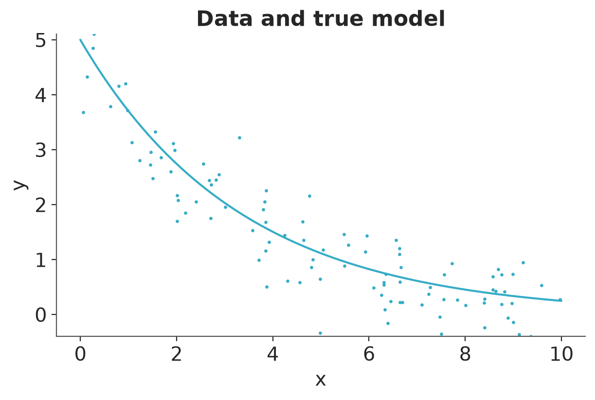
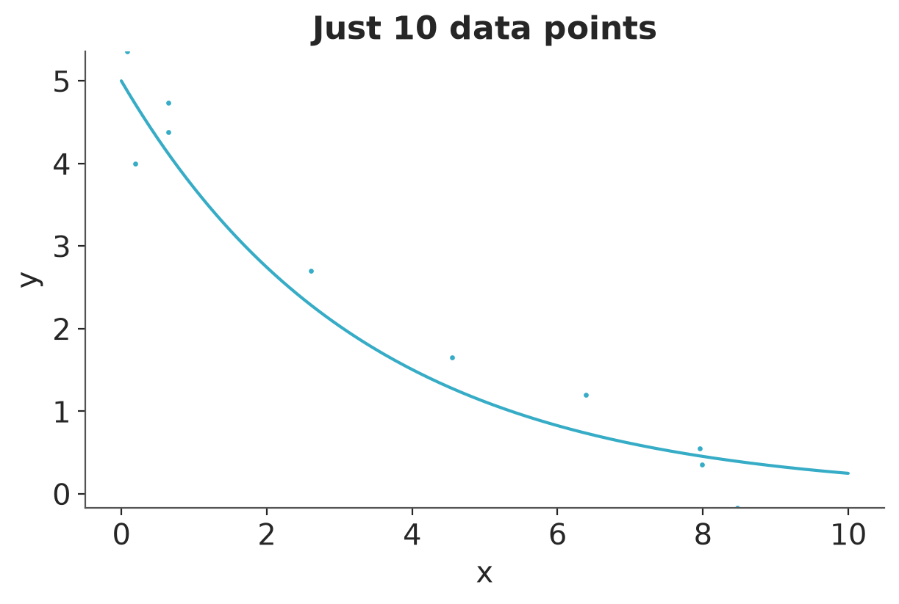
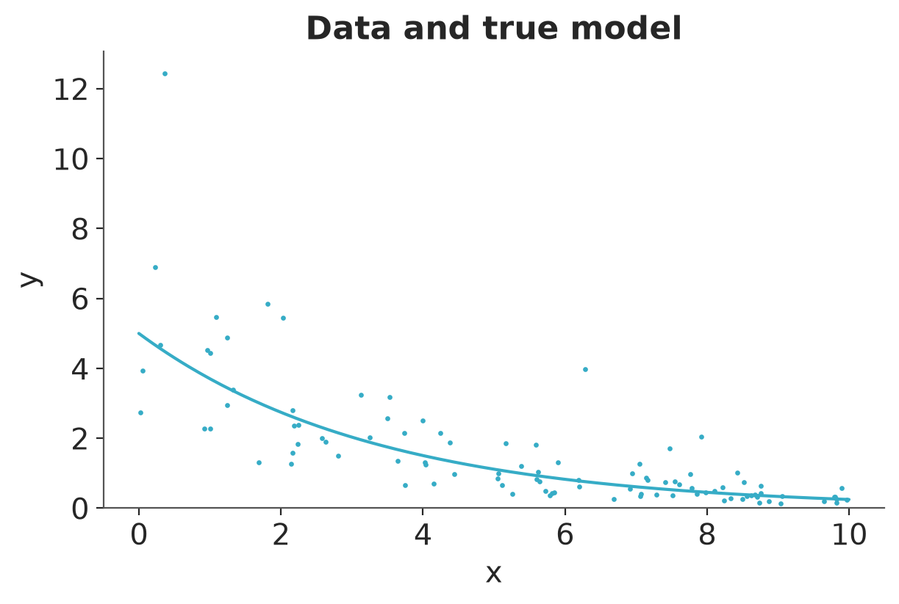
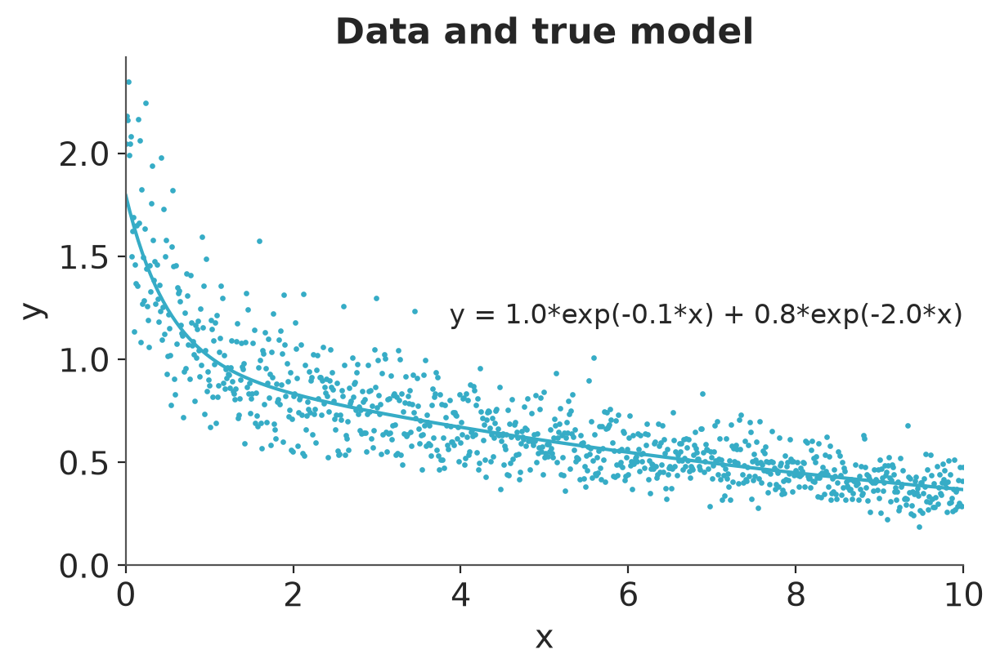
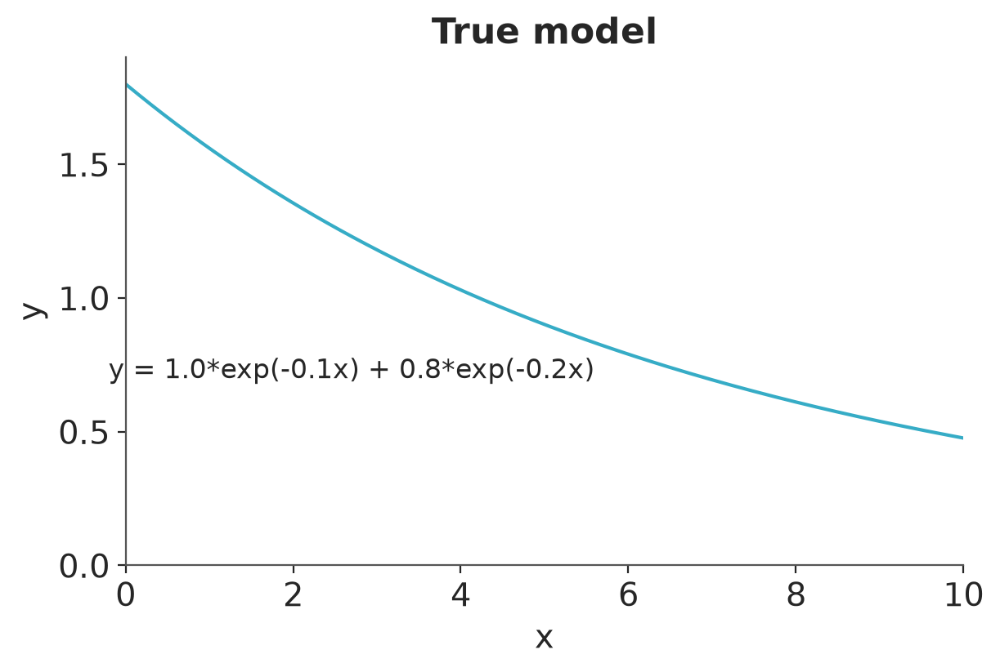
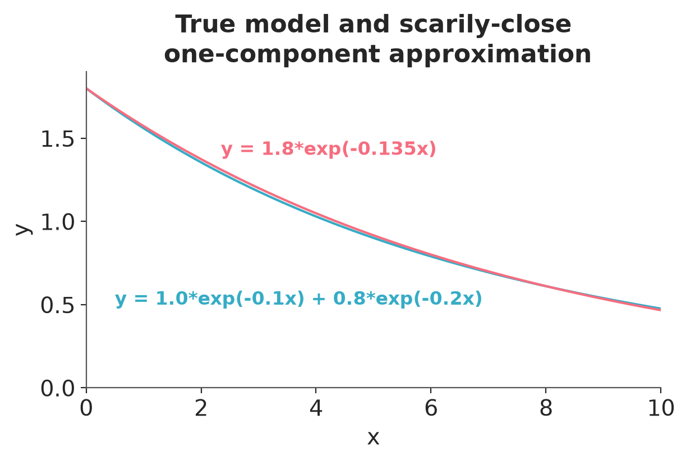

import sys
import warnings
sys.path.insert(0, "..")
import numpy as np
import matplotlib.pyplot as plt
from cmdstanpy import CmdStanModel, disable_logging
import arviz as az
from utils import print_stan
warnings.filterwarnings("ignore")
disable_logging()
az.style.use("arviz-variat")
az.rcParams["stats.ci_prob"] = 0.95
plt.rcParams["figure.dpi"] = 100
SEED = 1123
rng = np.random.default_rng(SEED)Declining exponentials
This notebook includes the code for the Bayesian Workflow book Section 12.4 Using modeling ideas to address computing problems.
1 Introduction
Declining exponential: A nonlinear model that comes up in many science and engineering applications, also illustrating the use of bounds in parameter estimation.
Sum of declining exponentials: An important class of nonlinear models that can be surprisingly difficult to estimate from data. This example illustrates how inference/sampling can fail, and also the way in which default prior information can add stability to an otherwise intractable problem.
2 Declining exponential
Let’s fit the following simple model: \(y = ae^{-bx} + \mathrm{error}\), given data \((x,y)_i\): \[ y_i = ae^{-bx_i} + \epsilon_i, \text{ for } i=1,\dots,N, \] We shall assume the errors are independent and normally distributed: \(\epsilon_i \sim \operatorname{normal}(0,\sigma)\).
Here is the model:
mod_1 = CmdStanModel(stan_file="exponential.stan")
print_stan(mod_1)data {
int N;
vector[N] x;
vector[N] y;
}
parameters {
real a;
real b;
real<lower=0> sigma;
}
model {
y ~ normal(a * exp(-b * x), sigma);
a ~ normal(0, 10);
b ~ normal(0, 10);
sigma ~ normal(0, 10);
}We have given the parameters \(a\), and \(b\), and \(\sigma\) normal prior distributions centered at 0 with standard deviation 10. In addition, the parameter \(\sigma\) is constrained to be positive. The purpose of the prior distributions is to keep the computations at a reasonable value. If we were working on a problem in which we thought that \(a\), \(b\), or \(\sigma\) could be much greater than 10, we would want to use a weaker prior distribution.
2.1 Simulated data
To demonstrate our exponential model, we fit it to fake data. We’ll simulate \(N=100\) data points with predictors \(x\) uniformly distributed between 0 and 10, from the above model with \(a=5\), \(b=0.3\), \(\sigma=0.5\).
a = 5
b = 0.3
sigma = 0.5
N = 100
x = rng.uniform(0, 10, N)
y = rng.normal(a * np.exp(-b * x), sigma)Here is a graph of the true curve and the simulated data:
x_curve = np.linspace(0, 10, 200)
_, ax = plt.subplots(figsize=(6, 4))
ax.plot(x_curve, a * np.exp(-b * x_curve))
ax.scatter(x, y, s=2)
ax.set(
xlabel="x",
ylabel="y",
ylim=(min(y.min(), 0), y.max()),
title="Data and true model",
)[Text(0.5, 0, 'x'),
Text(0, 0.5, 'y'),
(-0.4005344017978851, 5.103059607167194),
Text(0.5, 1.0, 'Data and true model')]
And then we fit the model:
data_1 = {"N": N, "x": x, "y": y}
fit_1 = mod_1.sample(data=data_1, seed=SEED, show_progress=False)Posterior summary:
dt_1 = az.from_cmdstanpy(fit_1)
az.summary(dt_1)| mean | sd | eti95_lb | eti95_ub | ess_bulk | ess_tail | r_hat | mcse_mean | mcse_sd | |
|---|---|---|---|---|---|---|---|---|---|
| a | 4 | 2 | 5.3e-08 | 5.1 | 7 | 28 | 1.53 | 1 | 0.59 |
| b | -0.2 | 0.8 | -1.6 | 0.34 | 7 | 19 | 1.55 | 0.41 | 0.23 |
| sigma | 0.47 | 0.06 | 0.37 | 0.57 | 6 | 12 | 1.58 | 0.028 | 0.014 |
Recall that the true parameter values were \(a=5.0\), \(b=0.3\), \(\sigma=0.5\). Here the model is simple enough and the data are clean enough that we can estimate all three of these parameters with reasonable precision from the data, as can be seen from the 95% intervals above.
Alternatively, we might want to say ahead of time that we are fitting a declining exponential curve that starts positive and descends to zero. We would thus want to constrain the parameters \(a\) and \(b\) to be positive, which we can do in the parameters block:
real<lower=0> a;
real<lower=0> b;Otherwise we leave the model unchanged. In this case the results turn out to be very similar:
mod_1b = CmdStanModel(stan_file="exponential_positive.stan")
print_stan(mod_1b)data {
int N;
vector[N] x;
vector[N] y;
}
parameters {
real<lower=0> a;
real<lower=0> b;
real<lower=0> sigma;
}
model {
y ~ normal(a * exp(-b * x), sigma);
a ~ normal(0, 10);
b ~ normal(0, 10);
sigma ~ normal(0, 10);
}fit_1b = mod_1b.sample(data=data_1, seed=SEED, show_progress=False)Posterior summary:
dt_1b = az.from_cmdstanpy(fit_1b)
az.summary(dt_1b)| mean | sd | eti95_lb | eti95_ub | ess_bulk | ess_tail | r_hat | mcse_mean | mcse_sd | |
|---|---|---|---|---|---|---|---|---|---|
| a | 4.778 | 0.194 | 4.4 | 5.2 | 2361 | 2163 | 1.00 | 0.004 | 0.003 |
| b | 0.3087 | 0.017 | 0.28 | 0.34 | 2336 | 2434 | 1.00 | 0.00035 | 0.00027 |
| sigma | 0.5 | 0.036 | 0.44 | 0.58 | 2341 | 2547 | 1.00 | 0.00076 | 0.00056 |
2.2 Small simulated data
With weaker data, though, the constraints could make a difference. We could experiment on this by doing the same simulation but with just \(N=10\) data points:
a = 5
b = 0.3
sigma = 0.5
N = 10
x = rng.uniform(0, 10, N)
y = rng.normal(a * np.exp(-b * x), sigma)x_curve = np.linspace(0, 10, 200)
_, ax = plt.subplots(figsize=(6, 4))
ax.plot(x_curve, a * np.exp(-b * x_curve))
ax.scatter(x, y, s=2)
ax.set(
xlabel="x",
ylabel="y",
ylim=(min(y.min(), 0), y.max()),
title="Just 10 data points",
)[Text(0.5, 0, 'x'),
Text(0, 0.5, 'y'),
(-0.1731081546451445, 5.355912024502946),
Text(0.5, 1.0, 'Just 10 data points')]
First we fit the unconstrained model:
data_2 = {"N": N, "x": x, "y": y}
fit_2 = mod_1.sample(data=data_2, seed=SEED, show_progress=False)Posterior summary:
dt_2 = az.from_cmdstanpy(fit_2)
az.summary(dt_2)| mean | sd | eti95_lb | eti95_ub | ess_bulk | ess_tail | r_hat | mcse_mean | mcse_sd | |
|---|---|---|---|---|---|---|---|---|---|
| a | 4 | 2 | -3.5e-07 | 5.8 | 7 | 31 | 1.53 | 1.1 | 0.63 |
| b | -0.2 | 0.8 | -1.6 | 0.4 | 6 | 11 | 1.57 | 0.41 | 0.23 |
| sigma | 0.53 | 0.2 | 0.34 | 1 | 21 | 1315 | 1.13 | 0.034 | 0.052 |
Then we fit the constrained model:
fit_2b = mod_1b.sample(data=data_2, seed=SEED, show_progress=False)Posterior summary:
dt_2b = az.from_cmdstanpy(fit_2b)
az.summary(dt_2b)| mean | sd | eti95_lb | eti95_ub | ess_bulk | ess_tail | r_hat | mcse_mean | mcse_sd | |
|---|---|---|---|---|---|---|---|---|---|
| a | 5.16 | 0.37 | 4.5 | 5.9 | 2028 | 1539 | 1.00 | 0.0084 | 0.0087 |
| b | 0.288 | 0.07 | 0.2 | 0.43 | 1669 | 1619 | 1.00 | 0.0024 | 0.012 |
| sigma | 0.58 | 0.2 | 0.33 | 1.1 | 1434 | 1605 | 1.00 | 0.0056 | 0.0086 |
Different things can happen with different sets of simulated data, but the inference with the positivity constraints will typically be much more stable. Of course, we would only want to constrain the model in this way if we knew that the positivity restriction is appropriate.
2.3 Positive simulated data
Now suppose that the data are also restricted to be positive. Then we need a different error distribution, as the above model with additive normal errors can yield negative data.
Let’s try a multiplicative error, with a lognormal distribution: \[ y_i = ae^{-bx_i} \cdot \epsilon_i, \text{ for } i=1,\dots,N\\ \log\epsilon_i \sim \operatorname{normal}(0,\log\sigma), \text{ for } i=1,\dots,N \]
Here is the model:
mod_3 = CmdStanModel(stan_file="exponential_positive_lognormal.stan")
print_stan(mod_3)data {
int N;
vector[N] x;
vector[N] y;
}
parameters {
real<lower=0> a;
real<lower=0> b;
real<lower=0> sigma;
}
model {
vector[N] y_pred = a * exp(-b * x);
y ~ lognormal(log(y_pred), sigma);
a ~ normal(0, 10);
b ~ normal(0, 10);
sigma ~ normal(0, 10);
}As before, we can simulate fake data from this model:
a = 5
b = 0.3
sigma = 0.5
N = 100
x = rng.uniform(0, 10, N)
epsilon = np.exp(rng.normal(0, sigma, N))
y = a * np.exp(-b * x) * epsilonx_curve = np.linspace(0, 10, 200)
_, ax = plt.subplots(figsize=(6, 4))
ax.plot(x_curve, a * np.exp(-b * x_curve))
ax.scatter(x, y, s=2)
ax.set(
xlabel="x",
ylabel="y",
ylim=(0, y.max() * 1.05),
title="Data and true model",
)[Text(0.5, 0, 'x'),
Text(0, 0.5, 'y'),
(0.0, 13.066845702548946),
Text(0.5, 1.0, 'Data and true model')]
We can then fit the model to the simulated data and check that the parameters are approximately recovered:
data_3 = {"N": N, "x": x, "y": y}
fit_3 = mod_3.sample(data=data_3, seed=SEED, show_progress=False)Posterior summary:
dt_3 = az.from_cmdstanpy(fit_3)
az.summary(dt_3)| mean | sd | eti95_lb | eti95_ub | ess_bulk | ess_tail | r_hat | mcse_mean | mcse_sd | |
|---|---|---|---|---|---|---|---|---|---|
| a | 4.87 | 0.57 | 3.9 | 6.1 | 1403 | 1763 | 1.00 | 0.015 | 0.011 |
| b | 0.2924 | 0.0186 | 0.26 | 0.33 | 1541 | 1835 | 1.00 | 0.00047 | 0.00033 |
| sigma | 0.542 | 0.039 | 0.47 | 0.62 | 2297 | 2127 | 1.00 | 0.00082 | 0.00061 |
3 Sum of declining exponentials
From the numerical analysis literature, here is an example of an inference problem that appears simple but can be surprisingly difficult. The challenge is to estimate the parameters of a sum of declining exponentials: \(y = a_1e^{-b_1x} + a_2e^{-b_2x}\). This is also called an inverse problem, and it can be challenging to decompose these two declining functions.
This expression, and others like it, arise in many examples, including in pharmacology, where \(x\) represents time and \(y\) could be the concentration of a drug in the blood of someone who was given a specified dose at time 0. In a simple two-compartment model, the total concentration will look like a sum of declining exponentials.
To set this up as a statistics problem, we add some noise to the system. We want the data to always be positive so our noise will be multiplicative: \[ y_i = (a_1e^{-b_1x_i} + a_2e^{-b_2x_i}) \cdot \epsilon_i, \text{ for } i=1,\dots,N, \] with lognormally-distributed errors \(\epsilon\).
Here is the model:
mod_4 = CmdStanModel(stan_file="sum_of_exponentials.stan")
print_stan(mod_4)data {
int N;
vector[N] x;
vector[N] y;
}
parameters {
vector<lower=0>[2] a;
positive_ordered[2] b;
real<lower=0> sigma;
}
model {
vector[N] y_pred = a[1] * exp(-b[1] * x) + a[2] * exp(-b[2] * x);
y ~ lognormal(log(y_pred), sigma);
}The coefficients \(a\) and the residual standard deviation \(\sigma\) are constrained to be positive. The parameters \(b\) are also positive—these are supposed to be declining, not increasing, exponentials—and are also constrained to be ordered, so that \(b_1<b_2\). We need this to keep the model identified: Without some sort of restriction, there would be no way from the data to tell which component is labeled 1 and which is 2. So we arbitrarily label the component with lower value of \(b\)—that is, the one that declines more slowly—as the first one, and the component with higher value of \(b\) to be the second. We added the positive_ordered type to Stan because this sort of identification problem comes up fairly often in applications.
We’ll try out our model by simulating fake data from a model where the two curves should be cleanly distinguished, setting \(b_1=0.1\) and \(b_2=2.0\), a factor of 20 apart in scale. We’ll simulate 1000 data points where the predictors \(x\) are uniformly spaced from 0 to 10, and, somewhat arbitrarily, set \(a_1=1.0\), \(a_2=0.8\), and \(\sigma=0.2\). We can then simulate from the lognormal distribution to generate the data \(y\).
a = np.array([1.0, 0.8])
b = np.array([0.1, 2.0])
N = 1000
x = np.linspace(0, 10, N)
sigma = 0.2
epsilon = np.exp(rng.normal(0, sigma, N))
y = (a[0] * np.exp(-b[0] * x) + a[1] * np.exp(-b[1] * x)) * epsilonHere is a graph of the true curve and the simulated data:
x_curve = np.linspace(0, 10, 200)
y_true = a[0] * np.exp(-b[0] * x_curve) + a[1] * np.exp(-b[1] * x_curve)
_, ax = plt.subplots(figsize=(6, 4))
ax.plot(x_curve, y_true)
ax.scatter(x, y, s=2)
ax.set(
xlabel="x",
ylabel="y",
xlim=(0, 10),
ylim=(0, y.max() * 1.05),
title="Data and true model",
)
label = f"y = {a[0]:.1f}*exp({-b[0]:.1f}*x) + {a[1]:.1f}*exp({-b[1]:.1f}*x)"
ax.text(x_curve[-1], 0.5 * y.max(), label, ha="right")Text(10.0, 1.1744770193274545, 'y = 1.0*exp(-0.1*x) + 0.8*exp(-2.0*x)')
And then we fit the model:
data_4 = {"N": N, "x": x, "y": y}
fit_4 = mod_4.sample(data=data_4, seed=SEED, show_progress=False)Posterior summary:
dt_4 = az.from_cmdstanpy(fit_4)
az.summary(dt_4)| mean | sd | eti95_lb | eti95_ub | ess_bulk | ess_tail | r_hat | mcse_mean | mcse_sd | |
|---|---|---|---|---|---|---|---|---|---|
| a[0] | 1.0214 | 0.019 | 0.98 | 1.1 | 2016 | 2246 | 1.00 | 0.00042 | 0.0003 |
| a[1] | 0.919 | 0.101 | 0.73 | 1.1 | 2602 | 2415 | 1.00 | 0.002 | 0.0015 |
| b[0] | 0.1045 | 0.00291 | 0.099 | 0.11 | 2005 | 2222 | 1.00 | 6.5e-05 | 4.5e-05 |
| b[1] | 2.44 | 0.35 | 1.8 | 3.2 | 2112 | 2556 | 1.00 | 0.0076 | 0.0059 |
| sigma | 0.1987 | 0.0045 | 0.19 | 0.21 | 3106 | 2618 | 1.00 | 8e-05 | 5.7e-05 |
The parameters are recovered well, with the only difficulty being \(b_2\), where the estimate is 1.89 but the true value is 2.0—but that is well within the posterior uncertainty. Inference worked just fine on this nonlinear model.
But now let’s make the problem just slightly more difficult. Instead of setting the two parameters \(b\) to 0.1 and 2.0, we’ll make them 0.1 and 0.2, so now only a factor of 2 separates the scales of the two declining exponentials.
b = np.array([0.1, 0.2])
y_2 = (a[0] * np.exp(-b[0] * x) + a[1] * np.exp(-b[1] * x)) * epsilon
data_5 = {"N": N, "x": x, "y": y_2}This should still be easy to fit, right? Wrong:
fit_5 = mod_4.sample(data=data_5, seed=SEED, show_progress=False)Posterior summary:
dt_5 = az.from_cmdstanpy(fit_5)
az.summary(dt_5, round_to="None")| mean | sd | eti95_lb | eti95_ub | ess_bulk | ess_tail | r_hat | mcse_mean | mcse_sd | |
|---|---|---|---|---|---|---|---|---|---|
| a[0] | 1.786267 | 0.021717 | 1.744915e+00 | 1.831921e+00 | 315.875671 | 409.490112 | 1.008688 | 0.001224 | 0.000890 |
| a[1] | 0.476588 | 0.298072 | 2.261983e-02 | 1.202402e+00 | 8.163059 | 18.522119 | 1.451951 | 0.096439 | 0.082022 |
| b[0] | 0.136036 | 0.002111 | 1.319600e-01 | 1.403312e-01 | 303.606150 | 417.188929 | 1.013297 | 0.000121 | 0.000089 |
| b[1] | inf | inf | 5.021530e+306 | 1.750327e+308 | 336.335929 | 707.903789 | 1.013876 | NaN | NaN |
| sigma | 0.198618 | 0.004426 | 1.899990e-01 | 2.077931e-01 | 429.671166 | 474.142117 | 1.013340 | 0.000214 | 0.000158 |
What happened?? It turns out that these two declining exponentials are very hard to detect. Look: here’s a graph of the two-component model for the expected data, \(y=1.0e^{-0.1x}+0.8e^{-0.2x}\):
a_true = np.array([1.0, 0.8])
b_true = np.array([0.1, 0.2])
x_curve = np.linspace(0, 10, 200)
_, ax = plt.subplots(figsize=(6, 4))
y_true = a_true[0] * np.exp(-b_true[0] * x_curve) + a_true[1] * np.exp(-b_true[1] * x_curve)
ax.plot(x_curve, y_true)
ax.set(
xlabel="x",
ylabel="y",
xlim=(0, 10),
ylim=(0, 1.9),
title="True model",
)
ax.text(5.6, 0.7, "y = 1.0*exp(-0.1x) + 0.8*exp(-0.2x)", ha="right")Text(5.6, 0.7, 'y = 1.0*exp(-0.1x) + 0.8*exp(-0.2x)')
And now we’ll overlay a graph of a particular one-component model, \(y=1.8e^{-0.135x}\):
_, ax = plt.subplots(figsize=(6, 4))
y_true = a_true[0] * np.exp(-b_true[0] * x_curve) + a_true[1] * np.exp(-b_true[1] * x_curve)
ax.plot(x_curve, y_true)
ax.plot(x_curve, 1.8 * np.exp(-0.135 * x_curve))
ax.set(
xlabel="x",
ylabel="y",
xlim=(0, 10),
ylim=(0, 1.9),
)
ax.set_title("True model and scarily-close\n one-component approximation",
)
ax.text(6.9, 0.5, "y = 1.0*exp(-0.1x) + 0.8*exp(-0.2x)", ha="right", color="C0", fontdict={"weight": "bold"});
ax.text(6.1, 1.4, "y = 1.8*exp(-0.135x)", ha="right", color="C1", fontdict={"weight": "bold"});
The two lines are strikingly close, and it would be essentially impossible to tell them apart based on noisy data, even 1000 measurements. So we had trouble recovering the true parameters from the data.
Still, if the parameters are difficult to fit, this should just result in a high posterior uncertainty. Why did the fit explode? The problem in this case is that, since only one term in the model was required to fit these data, the second term was completely free—and the parameter \(\beta_2\) was unbounded: there was nothing stopping it from being estimated as arbitrarily large. This sort of unbounded posterior distribution is called improper (see Bayesian Data Analysis for a more formal definition), and there is no way of drawing simulations from such a distribution, hence sampling does not converge. The simulations drift off to infinity, as there is nothing in the prior or likelihood that is keeping them from doing so.
To fix the problem, we can add some prior information. Here we shall use our default, which is independent \(\operatorname{normal}(0,1)\) prior densities on all the parameters; thus, we add these lines to the model:
a ~ normal(0, 1);
b ~ normal(0, 1);
sigma ~ normal(0, 1);For this particular example, all we really need is a prior on \(b\) (really, just \(b_2\) because of the ordering), but to demonstrate the point we shall assign default priors to everything. The priors are in addition to the rest of the model; that is, they go on top of the positivity and ordering constraints. So, for example, the prior for \(\sigma\) is the positive half of a normal, which is sometimes written as \(\operatorname{normal}^+(0,1)\).
We now can fit this new model to our data, and the results are much more stable:
mod_5_with_priors = CmdStanModel(stan_file="sum_of_exponentials_with_priors.stan")
print_stan(mod_5_with_priors)data {
int N;
vector[N] x;
vector[N] y;
}
parameters {
vector<lower=0>[2] a;
positive_ordered[2] b;
real<lower=0> sigma;
}
model {
vector[N] y_pred = a[1] * exp(-b[1] * x) + a[2] * exp(-b[2] * x);
y ~ lognormal(log(y_pred), sigma);
a ~ normal(0, 1);
b ~ normal(0, 1);
sigma ~ normal(0, 1);
}fit_5_with_priors = mod_5_with_priors.sample(data=data_5, seed=SEED, show_progress=False)Posterior summary:
dt_5_with_priors = az.from_cmdstanpy(fit_5_with_priors)
az.summary(dt_5_with_priors)| mean | sd | eti95_lb | eti95_ub | ess_bulk | ess_tail | r_hat | mcse_mean | mcse_sd | |
|---|---|---|---|---|---|---|---|---|---|
| a[0] | 1.5 | 0.4 | 0.33 | 1.8 | 44 | 36 | 1.07 | 0.077 | 0.098 |
| a[1] | 0.3 | 0.3 | 0.016 | 1.5 | 52 | 38 | 1.08 | 0.072 | 0.094 |
| b[0] | 0.125 | 0.01 | 0.087 | 0.14 | 68 | 39 | 1.05 | 0.0023 | 0.0051 |
| b[1] | 0.71 | 0.63 | 0.14 | 2.3 | 101 | 85 | 1.06 | 0.031 | 0.029 |
| sigma | 0.1989 | 0.0043 | 0.19 | 0.21 | 1301 | 1658 | 1.00 | 0.00012 | 8.8e-05 |
The fit is far from perfect—compare to the true parameter values, \(a_1=1.0\), \(a_2=0.8\), \(b_1=0.1\), \(b_2=0.2\)—but we have to expect that. As explained above, the data at hand do not identify the parameters, so all we can hope for in a posterior distribution is some summary of uncertainty.
The question then arises, what about those prior distributions? We can think about them in a couple different ways.
From one direction, we can think of scaling. We are using priors centered at 0 with a scale of 1; this can be reasonable if the parameters are on “unit scale,” meaning that we expect them to be of order of magnitude around 1. Not all statistical models are on unit scale. For example, in the above model, if the data \(y_i\) are on unit scale, but the data values \(x_i\) take on values in the millions, then we’d probably expect the parameters \(b_1\) and \(b_2\) to be roughly on the scale of \(10^{-6}\). In such a case, we’d want to rescale \(x\) so that the coefficients \(b\) are more interpretable. Similarly, if the values of \(y\) ranged in the millions, then the coefficients \(a\) would have to be of order \(10^6\), and, again, we would want to rescale the data or the model so that \(a\) would be on unit scale. By using unit scale priors, we are implicitly assuming the model has been scaled.
From the other direction, instead of adapting the model to the prior distribution, we could adapt the prior to the model. That would imply an understanding of a reasonable range of values for the parameters, based on the context of the problem. In any particular example this could be done by simulating parameter vectors from the prior distribution and graphing the corresponding curves of expected data, and seeing if these could plausibly cover the possible cases that might arise in the particular problem being studied.
No matter how it’s done, inference has to come from somewhere, and if the data are weak, you need to put in prior information if your goal is to make some statement about possible parameter values, and from there to make probabilistic predictions and decisions.
Licenses
- Code © 2022–2025, Andrew Gelman, licensed under BSD-3.
- Text © 2022–2025, Andrew Gelman, licensed under CC-BY-NC 4.0.